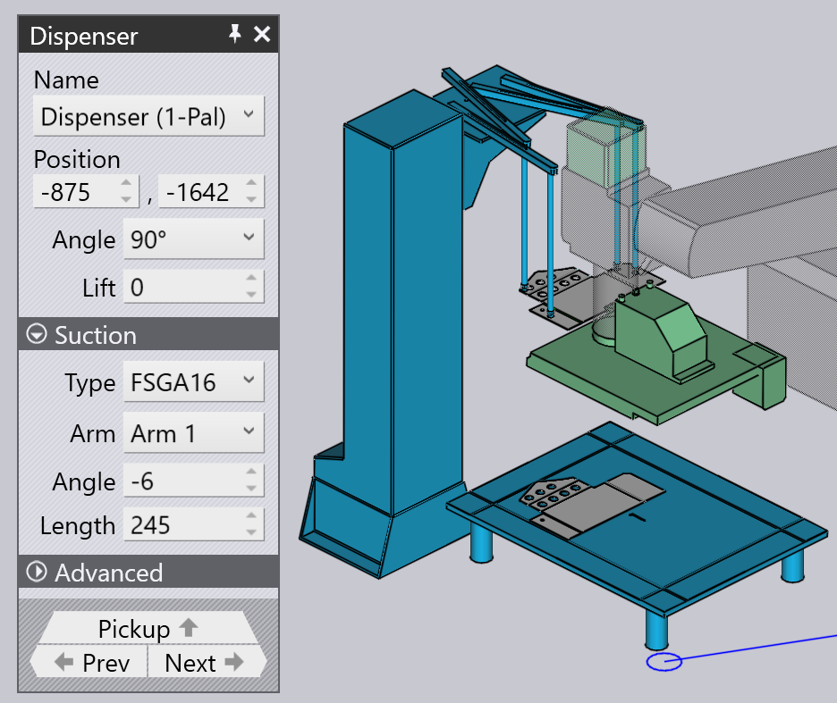
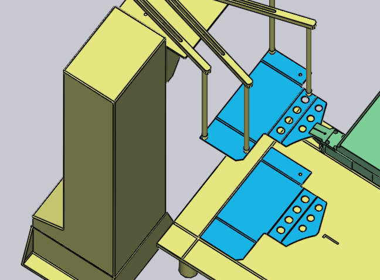
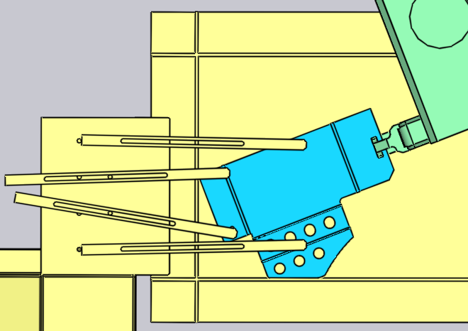
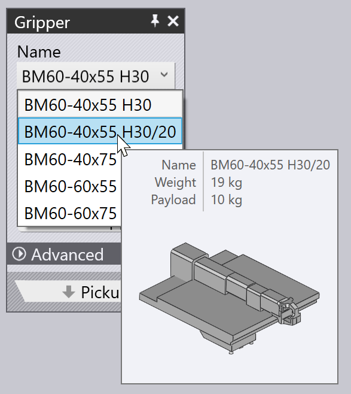
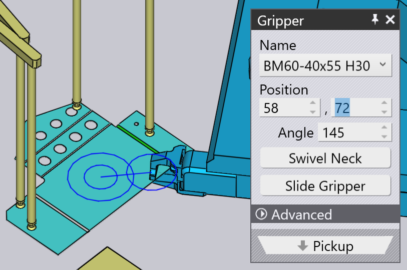
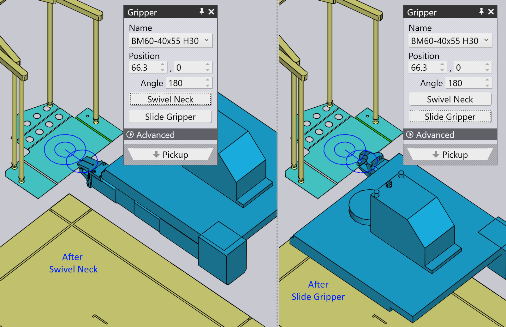
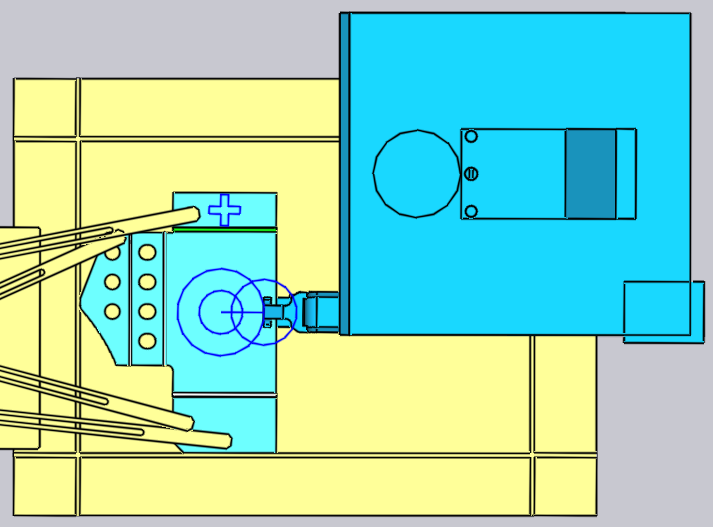
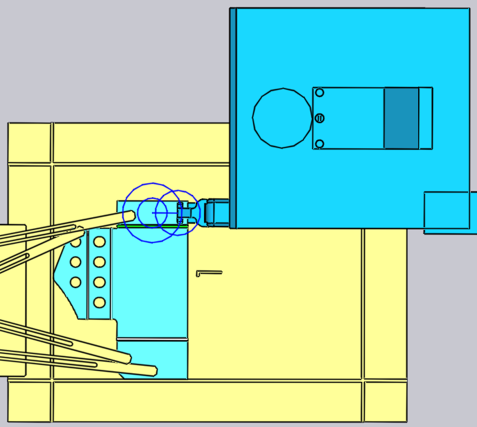

Vyzvednutí z dávkovače
Malými díly manipuluje mechanický upínač, známý v TecZone Bend také jako čelisťový upínač. Pokud je díl menší než formát A4, TecZone Bend automaticky přepne na použití čelisťového upínače. Tento upínač může pouze vyzvedávat díly z dávkovací stanice (známé také jako dávkovač surového materiálu). Tyto parametry ovlivňují tento proces vyzvednutí:
-
Poloha a orientace dávkovače v buňce stroje.
-
Orientace dílu na dávkovači.
-
Poloha a orientace čelisťového upínače na dílu.
Panely používané k úpravě všech těchto nastavení jsou zobrazeny níže – všechny jsou propojeny navigačními odkazy nahoru/dolů, které vedou k dalším panelům v logickém pořadí:

Jak ukazuje obrázek výše, k těmto panelům lze také snadno přistupovat pouhým kliknutím na různé objekty v simulaci:
-
Chcete-li otevřít panel Dávkovač, klikněte na dávkovač.
-
Chcete-li upravit orientaci dílu na dávkovači, klikněte na surový materiál na dávkovači (nejprve nastavte aktuální fázi na Vyzvednutí kliknutím na sloupec P v navigátoru).
-
Chcete-li upravit polohu držení Upínače na dílu, klikněte na upínač.
Panel dávkovače
Chcete-li otevřít panel Dávkovač, klikněte na dávkovač. TecZone Bend umístí díl do vyrovnávacího rohu dávkovače a umístí ramena sacího upínače do rohů dílu. Pomocí tohoto panelu můžete upravit konfiguraci ramene a umístění dávkovače.

-
Pomocí nastavení Position, Angle a Lift nastavte polohu a orientaci dávkovače tak, aby odpovídala skutečné poloze v buňce.
Konfigurace sání
Nastavení v nastavení Sání slouží ke konfiguraci přísavkových ramen. Tato nastavení jsou pouze orientační a nejsou kritická, protože nejsou přenášena do stroje v NC programu. Obsluha stroje bude muset ručně nastavit ramena (možná podle nastavovacího listu, který je součástí NC programu).
-
Vyberte Arm a upravte nastavení Angle a Length, aby se rameno otočilo a vysunulo, dokud nebudou přísavky umístěné na dílu.
-
Pomocí nastavení Type můžete vyměnit přísavky namontované na dávkovači.
| Vzhledem k tomu, že úhel a délka ramen nejsou součástí NC programu generovaného TecZone Bend, neprovádí se kontrola, zda se ramena navzájem neprotínají nebo nepřekrývají. |
Panel Vyzvednutí
Panel Vyzvednutí slouží k nastavení orientace dílu na dávkovači. Při otáčení nebo zrcadlení dílu vybere TecZone Bend vhodnou rovinu, pomocí které díl uchopí (protože upínač může vždy přijít pouze z jednoho směru). Tento panel můžete vyvolat kliknutím na surový materiál na dávkovači.

-
Tlačítko Rotate Part slouží k otočení dílu o 90 stupňů. Na obrázku výše není díl v ideální poloze pro referencování vůči rohu dávkovače. Zde je lepší výsledek po několika operacích otočení:

-
Pokud jsou surové materiály na dávkovači zrcadlené opačným směrem, můžete pomocí tlačítka Flip Part zrcadlit model tak, aby odpovídal:

Zarovnání libovolné hrany
Někdy však tato otočení o 90° nemusí být dostačující. Předpokládejme, že chcete zarovnat cílovou hranu (označenou na obrázku níže) s referencí Z na dávkovači:

Klikněte na Align Edge a vyberte možnost ui:AlignWithX[Align with Z] v menu, které se zobrazí. Poté klikněte na díl blízko cílové hrany. Tato hrana se nyní zarovná s referencí dávkovače. Výsledek je uveden níže[1], po několika úpravách polohy a orientace upínače, aby lépe vyhovoval tomuto novému uspořádání):

Panel upínače
Panel Upínač slouží k umístění upínače na díl, k přepnutí na jiný upínač a ke konfiguraci os otáčení a posuvu upínače při vyzvedávání dílu.

-
Pomocí seznamu Name vyberte nový upínač ze seznamu čelisťových upínačů, které jsou k dispozici pro tento stroj. Při procházení názvů v seznamu se zobrazí miniatura upínače:

-
Pomocí nastavení Position a Angle umístěte a nasměrujte upínač vzhledem k středovému bodu upínací roviny. Tento střed je označený dvojitými kruhy na obrázku výše. Zde je stejný upínač shora poté, co jsme upravili polohu a úhel:

-
Tlačítka Swivel Neck a Slide Gripper slouží ke změně konfigurace krku a posunutí upínače. Zde jsou výsledky, které jsme získali po provedení těchto operací na základě první konfigurace uvedené výše:

-
Tlačítko Use Vacuum Grip přepne díl na použití upínače s přísavkami. Jedná se v podstatě o kompletní přepočet dílu. Dávkovač se již nepoužívá a místo toho se díl odebírá z palety. Proces ohýbání, přeuchopení a vzor uložení jsou přepočítány, aby byly vhodnější pro upínač s přísavkami.
Změna upínací roviny
Příkaz Set Grip Plane se používá k uchopení dílu za jinou rovinu. Klikněte na toto tlačítko a poté přesuňte kurzor na rovinu, na kterou chcete přesunout upínač. Při tom se na dané rovině nakreslí křížek, který označuje, že je vybrána:

Kliknutím na rovinu se upínač přesune do této roviny, jak je znázorněno na obrázku níže. Obvykle takové změny v upínací rovině vyžadují také určité úpravy v procesu ohýbání, změny v přeuchopení atd.
